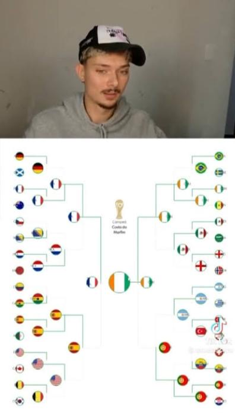

🚨URGENTE🚨!!!
Por: Kosky
Jovem promessa no mundo do streamer chamado Matheus Kosky fala em sua live dia 09/03/2026 que a seleção da Costa do Marfim vai ganhar a copa. Todos duvidaram do seu amplo conhecimento futebolístco, e agora ele fugiu do país pois esta sendo procurado pelo FBI, sera que o Koskinho sabe de algo que não sabemos?